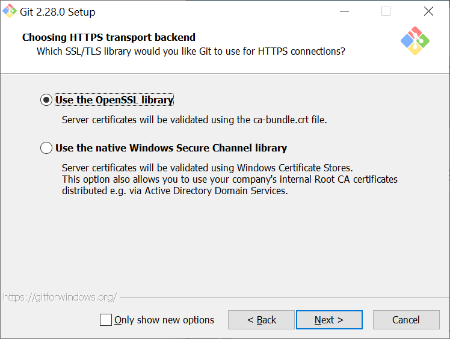

Installing and Setting Up Git
We will use Git to work together on our shared codebase.
Git is a version-control system that allows us to collaborate on code, track our changes, and merge our own changes with others'. GitHub is a popular code repository hosting service. We will use GitHub to host our code, make pull requests, and track issues. If you are unfamiliar with Git or GitHub, please take a moment to read Understanding the GitHub flow.
Install Atom
Atom is a text editor created by GitHub that includes a GUI for Git. It's also a powerful text editor, but in this lab, we'll be using Atom exclusively for its Git GUI.
When Installing Atom, make sure to install the appropriate version for your machine and follow the installation steps.
Check if you have git installed
Open the terminal and enter the following command to check whether Git is installed:
git --version
If you receive output that indicates that git is not a recognized command, it is most likely because Git is not installed. Download the current installer from the Git website, and continue to the instructions below.
If instead you find that git is installed with version 2.20+, you can skip ahead to Python.
Install git
If you're on macOS, run the installer and skip ahead to Python.
If you're on Windows, follow the instructions below.
Launch the installer and accept the license information displayed at its start.
You will now see a screen showing several installation options. Make sure that you have all of these boxes checked.
Select Atom as your default editor for Git.

Select the last option here, which adds the Git command line tools to your PATH for the Command Prompt.

On the next screen, make sure that "Use the OpenSSL Library" option is checked, and move on to the next page.

Select the following line ending conversions.

After this step, you should select the default terminal emulator that Git Bash uses. Please ensure that you are using MinTTY.
The following step should be left with default values.

If you are given the option to install experimental options on the next page, please do not select any of them.
← Communication Python →